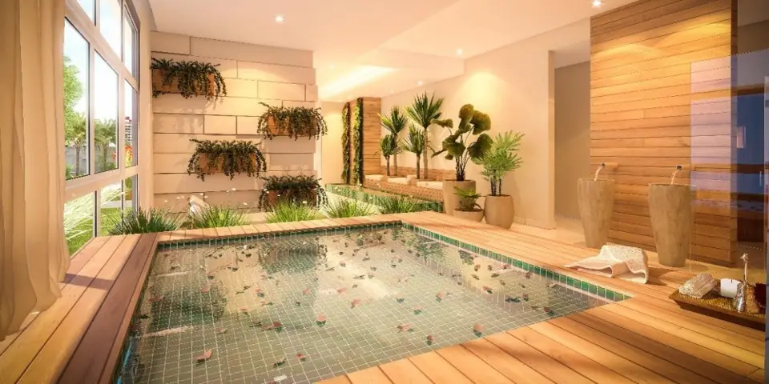

Imagens


Galeria
Imagens ilustrativas, de caráter artístico, conforme material da incorporadora.

Um resort perfeito para viver e se apaixonar no centro de Nova Iguaçu
Com nobre localização, surpreendente arquitetura, sofisticação singular e uma vista panorâmica de se apaixonar! Assim definimos o Jardins Residence.
Sinônimo de altíssima qualidade de vida, aqui você tem total segurança e, claro, a tranquilidade para ser feliz.
São 5 complexos de lazer compostos com mais de 30 itens: Parque aquático; Esporte e Fitness; Festas e Eventos; Kids e Teen; Saúde e Bem-estar.
Um verdadeiro Resort particular, e ele é todo seu! Sentado em um jardim bucólico, no coração pulsante da cidade, uma vista panorâmica de se apaixonar.
Metragens, tipologias e disponibilidade conforme material oficial da incorporadora, sujeitos a alteração sem aviso. Valores e condições confirmados na tabela vigente. Seleção e atendimento: Paulo Cotrim, CRECI-RJ 77677-F.
Imagens ilustrativas, de caráter artístico, conforme material da incorporadora.